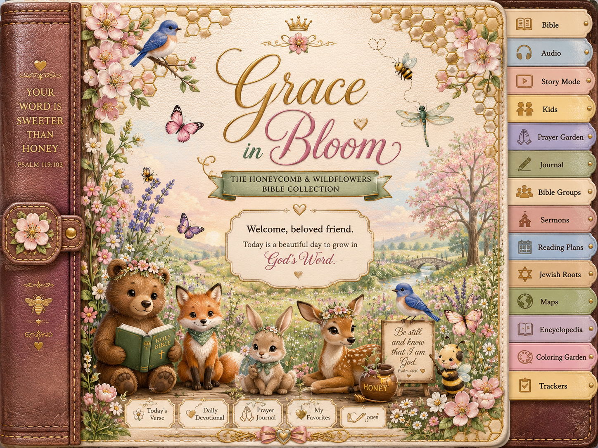

Founder Edition • Created by Beth Henry
Grace in Bloom
The Honeycomb & Wildflowers Bible Collection
Growing in God's Word One Page at a Time
“How sweet are Your words to my taste, sweeter than honey to my mouth!”
Psalm 119:103
Today in Grace in Bloom
🍯 Today's Honey Drop
📖 Today's Reading
🙏 Today's Prayer
✍ Reflection
Bible Library
Choose a Bible book, then choose Study, Kids Comic, or Audio. Genesis is active in this first build.
Genesis 1: In the Beginning
🖼 Chapter Picture Idea
A soft garden scene of sunrise, stars fading, birds in the sky, fish in the waters, animals in wildflowers, and light breaking over creation.
📖 Chapter Summary
Genesis 1 introduces God as Creator. God speaks into darkness, brings order to creation, fills the sky, sea, and land with life, and creates people in His image. The chapter teaches that creation is purposeful, ordered, blessed, and good.
🍯 Honey Drop
Before anything else begins, God is already present, powerful, and good.
🌿 Study Notes
Main theme: God creates, orders, blesses, and calls His creation good.
Key truth: Human beings are made in the image of God and given purpose.
Word to notice: “Good” — creation is not an accident; it reflects God's intention and care.
❤️ Devotional
Genesis 1 invites us to begin with God. Before our plans, fears, responsibilities, or questions, God is present. The same God who brought light into darkness can bring order, hope, and beauty into our lives.
🙏 Prayer
Creator God, thank You for the beauty of Your world and the purpose You give to every life. Help me see Your goodness today and live as someone made in Your image. Amen.
✍ My Genesis 1 Notes
Listen & Read
🎧 Genesis 1 Audio Script
Voice style: soft, calm female narrator.
“Welcome to Grace in Bloom. Today we begin Genesis chapter 1, the story of creation. Find a quiet place, take a deep breath, and prepare your heart to hear God's Word.”
After the reading: “Let's pause and remember today's Honey Drop: Before anything else begins, God is already present, powerful, and good.”
Audio Link
Kids Comics: Genesis 1
Panel 1
Oliver Bunny looks at a dark sky and whispers, “It was very quiet…”
Panel 2
God says, “Let there be light!” Bright golden light fills the page.
Panel 3
The sky, sea, land, plants, stars, birds, fish, and animals appear one by one.
Panel 4
Oliver smiles: “Everything God made was good!”
Family Question
What is one thing God made that makes you happy?
January Devotions
Each day now has a different Honey Drop, prayer, and reflection prompt.
Prayer Garden
🌱 Prayer Requests
🌸 Answered Prayers
🌼 Gratitude
🐦 People I'm Praying For
Journal
Weekly Sermon Notes
Bible Puzzles
Genesis 1 Word Search
Find: GOD, LIGHT, EARTH, WATER, DAY, NIGHT, SUN, MOON, STARS, GOOD
Genesis 1 Crossword Starter
Across 1: God said, “Let there be ____.”
Down 1: God called the dry land ____.
Across 2: God saw that it was ____.
Trivia
What did God create first in Genesis 1?
Jewish Roots & Biblical Feasts
Purpose
This section helps readers understand biblical and historical context. It distinguishes biblical feasts, later Jewish traditions, and Christian connections respectfully.
Passover / Pesach / פֶּסַח
Meaning: Passover
Biblical foundation: Exodus 12; Leviticus 23
Theme: Deliverance, remembrance, redemption.
Grace in Bloom Reflection: What does remembering God's deliverance teach me about trust?
Sabbath / Shabbat / שַׁבָּת
Meaning: Rest, ceasing
Biblical foundation: Genesis 2:1–3; Exodus 20:8–11
Theme: Rest, worship, delight in God.
Feelings & Scripture
Anxious
Philippians 4:6–7
Prayer: Lord, steady my heart and teach me to bring my worries to You.
Afraid
Isaiah 41:10
Prayer: God, remind me that You are with me.
Lonely
Psalm 34:18
Prayer: Draw near to me and help me feel Your comfort.
Need Wisdom
James 1:5
Prayer: Give me wisdom and a willing heart.